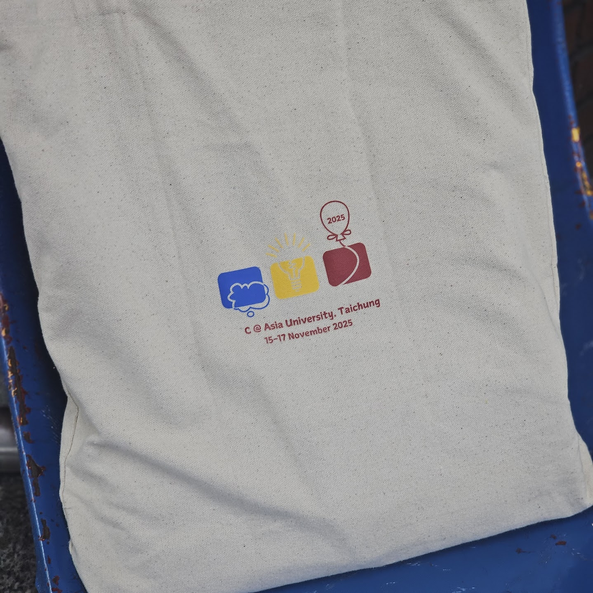

민성이는 2025년 ICPC 대만 리저널에 참여하고 받은 에코백을 보며 슬퍼하고 있다.
원래 에코백에는 ICPC 네 글자가 멋지게 인쇄되어 있었지만, 몇 글자가 떨어져 나가고 문자열 $$$S$$$만 남았기 때문이다.
슬퍼하는 민성이를 위해, 창민이는 지난 SCON 운영진이 남겨 둔 문자 스티커 $$$T$$$의 일부를 사용해 잃어버린 글자를 채워 가방에 다시 ICPC 문자열을 만들어 주려 한다.
문자열 $$$S$$$와 $$$T$$$가 주어졌을 때, 창민이가 민성이의 가방에 ICPC 문자열을 복원할 수 있는지 판별하라.
첫째 줄에 가방에 남아 있는 문자열 $$$S$$$의 길이 $$$N$$$이 주어진다. ($$$1 \le N \le 4$$$)
둘째 줄에 문자열 $$$S$$$가 주어진다. $$$S$$$는 'I', 'C', 'P'로만 구성되며, "ICPC"에서 순서를 유지한 채 일부 문자가 사라진 문자열이다.
셋째 줄에 문자 스티커 $$$T$$$의 길이 $$$M$$$이 주어진다. ($$$1 \le M \le 100$$$)
넷째 줄에 문자열 $$$T$$$가 주어진다. $$$T$$$는 대문자 알파벳으로만 구성되며, 같은 알파벳이 여러 번 등장할 수 있다.
$$$T$$$에 포함된 스티커를 사용하여 "ICPC"를 복원할 수 있으면 "m4us happy"를, 그렇지 않으면 "m4us sad"를 출력한다.
3CPC3ABC
m4us sad
2IC11CPISTOOHARD
m4us happy
지문과 달리 실제로 창민이는 민성이를 놀렸고, 그 때문인지 2026 Asia Pacific Championship에 가서 받은 가방에 붙어있던 스티커가 떨어졌다.
주의: 문자열을 저장하기 위해 char 배열을 사용하는 경우, 문자열의 끝을 나타내는 널 문자('0')를 저장할 공간이 추가로 필요하다. 예를 들어 길이가 100인 문자열을 저장하려면 배열의 크기를 최소 101 이상으로 선언해야 안전하다.